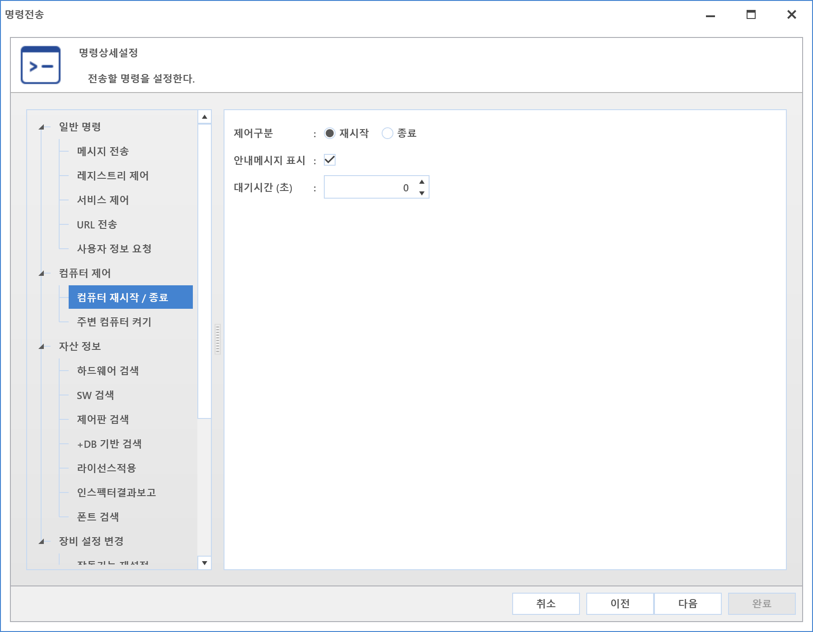
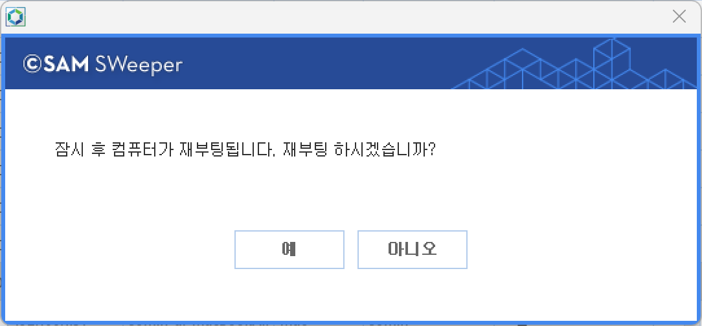

10-4-2-1. 컴퓨터 재시작/종료
10-4-2-1. 컴퓨터 재시작/종료
Source: https://www.sweeper.or.kr/etc/manual/10-4-2-1.html
10-4-2-1. 컴퓨터 재시작/종료
10. 기타 ›› 10-4. 명령전송 ›› 10-4-2. 컴퓨터 제어 ››


PC 전원을 재시작 또는 종료할 수 있는 명령입니다.
설정방법
최초 명령 메뉴 선택에 대한 부분은 상위 목차인 [명령전송]을 확인하여 주시기 바랍니다.
-
컴퓨터 재시작/종료를 선택합니다.
 -
컴퓨터 재시작/종료를 위한 설정을 합니다.
-
제어구분 : 컨트롤 방법을 선택합니다.
-
안내메시지 표시 :재시작/종료 전 사용자 PC 안내창 팝업 여부를 설정합니다.
-

-
대기시간(초) : 안내메시지 표시 체크시에만 설정할 수 있습니다.
-
0일 때는 사용자 선택을 대기하고, 그 외에는 지정된 시간에 강제종료(재시작) 합니다.
-
설정이 완료되면 다음버튼을 클릭합니다.
-
이후 설정내용은 [명령전송]을 확인하여 주시기 바랍니다.
주의사항
종료 시 사용자가 작업을 위해 실행한 프로그램도 함께 강제 종료되므로 이 부분에 대한 사용자 컴플레인 이슈가 발생하지 않도록 충분한 사전 공지 후 사용하는 것을 권장합니다.
© Copyright SWeeper Inc.. All Rights Reserved